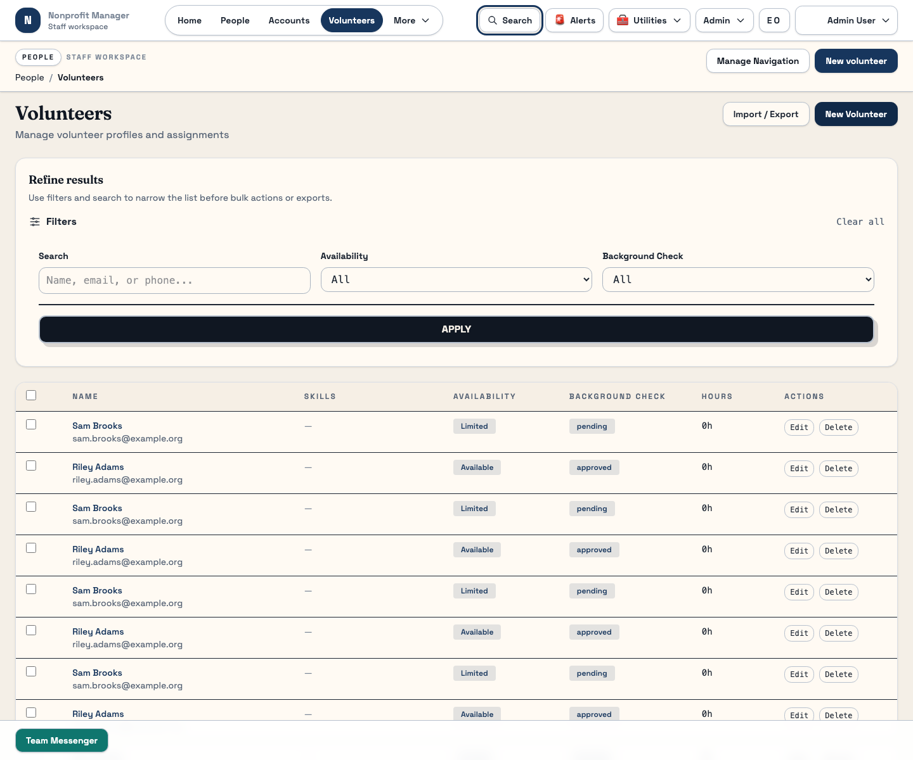
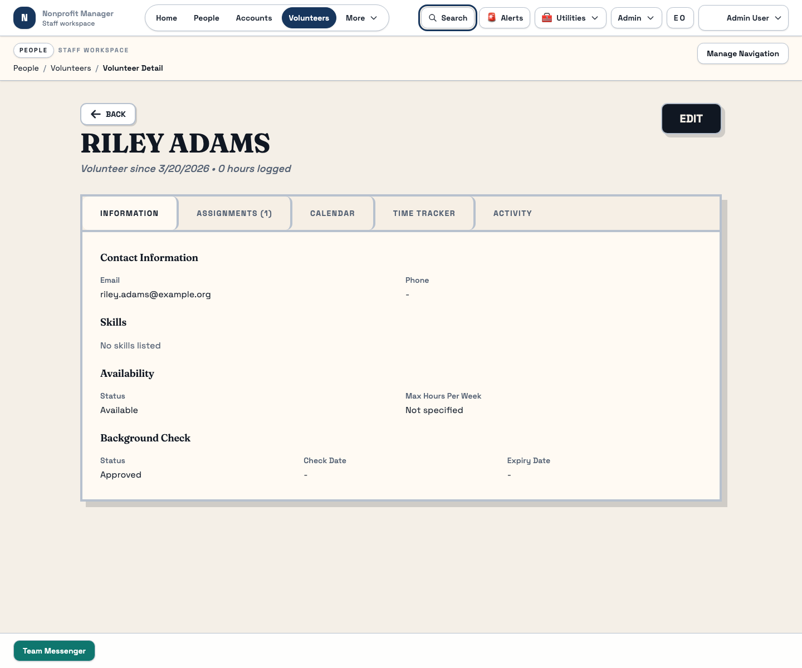
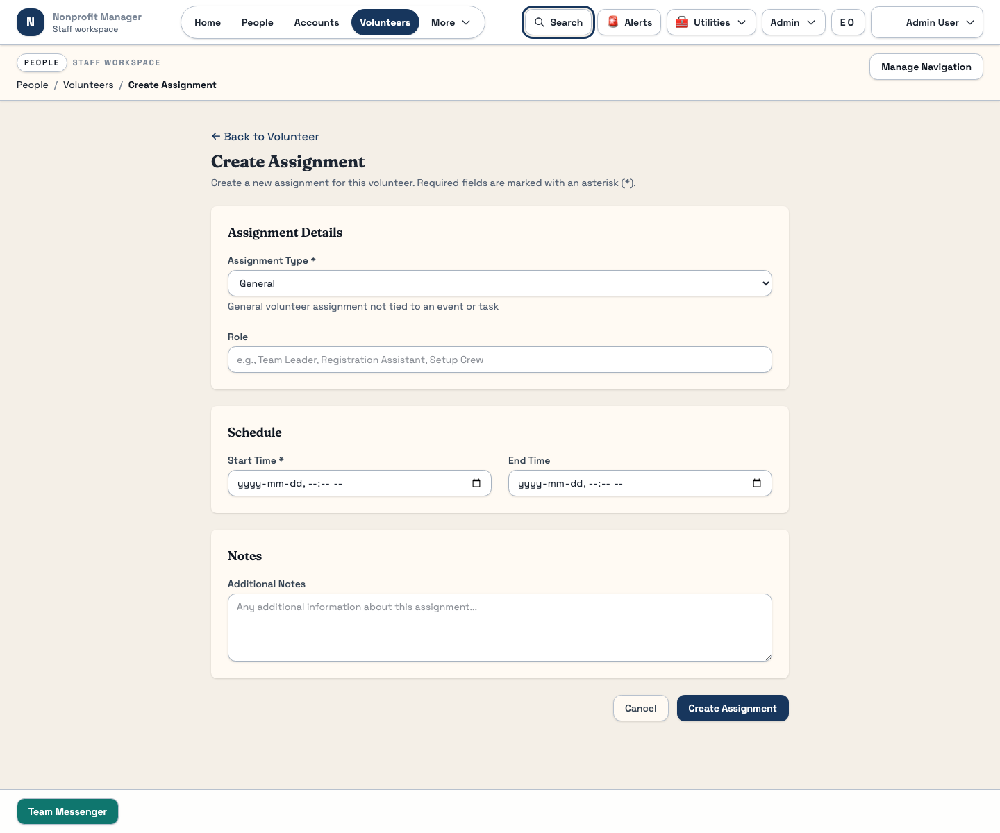

Volunteers
Manage volunteer readiness, assignments, and follow-through
Use the Volunteers workspace to track who is available, who has cleared background requirements, and who is assigned to current work. This guide stays focused on the stable list and assignment flows.
What this page is for
Use this guide when you need to add a volunteer, confirm their current readiness, or assign them to work. It helps staff keep volunteer data clean and makes event or program staffing easier downstream.
Before you start
- Check whether the volunteer already exists before creating a new profile.
- Know the volunteer's current availability and background check status if possible.
- Have the assignment details ready before opening the assignment form.
Steps
- Search and filter the volunteer list first. Use search, availability status, and background check filters to find the right person or confirm that the record does not already exist.
- Create the volunteer profile. Use New volunteer only after the search is clear and enter the core contact information needed for follow-up.
- Review the volunteer detail page. Use the detail view to confirm that contact information, readiness, and assignment history match what staff expects.
- Add or update assignments. Use the assignment flow from the volunteer detail page when a volunteer is being attached to current work.
- Keep statuses current. Availability and background check fields are operational signals. Update them promptly so scheduling decisions are based on current information.
- Use import or export only when your team needs batch work. Keep day-to-day edits in the main volunteer workflow unless a large update is intentional.



What happens next
A well-maintained volunteer record gives staff a reliable view of who can help right now and who still needs follow-up before assignment. That makes events and staffing reviews much faster.
Common mistakes
- Confusing availability status with background check status.
- Creating a second volunteer record because the first search was too narrow.
- Adding an assignment before confirming the volunteer is ready for it.
- Letting old status values stay in place after circumstances change.
Related guides
Need help?
If you are unsure whether a volunteer should be updated in place or recreated from scratch, ask your admin or volunteer coordinator before proceeding. That is especially important when existing assignments or hours could be affected.